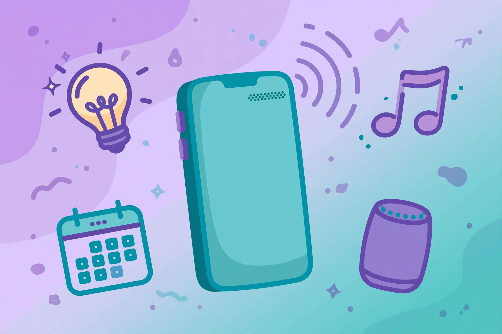

2026년 10월 16일

2017년에 나와 올해로 10살이 된 삼성의 AI 비서 '빅스비'가 큰 변신을 예고했습니다. 오는 10월 26일 갤럭시 S26 언팩에서 단순 명령을 수행하던 비서에서, 사용자의 의도를 파악하고 직접 일을 처리하는 '디바이스 에이전트'로 등장할 전망이에요.
달라지는 건 단순합니다. "빅스비, 전화 벨소리가 안 울려"라고 말하면 방해금지 설정을 확인해 직접 해제해주는 식이죠. 예전처럼 음량 조절이나 알람 설정 같은 단순 명령에만 그치지 않는 겁니다.
애플도 연내 개인화된 시리를 선보일 예정이라, 빅스비와 시리의 온디바이스 AI 경쟁이 본격화될 전망입니다. "실수 유발 장치"라는 별명까지 붙었던 빅스비가 10년 만에 자비스가 될 수 있을지 궁금해집니다.